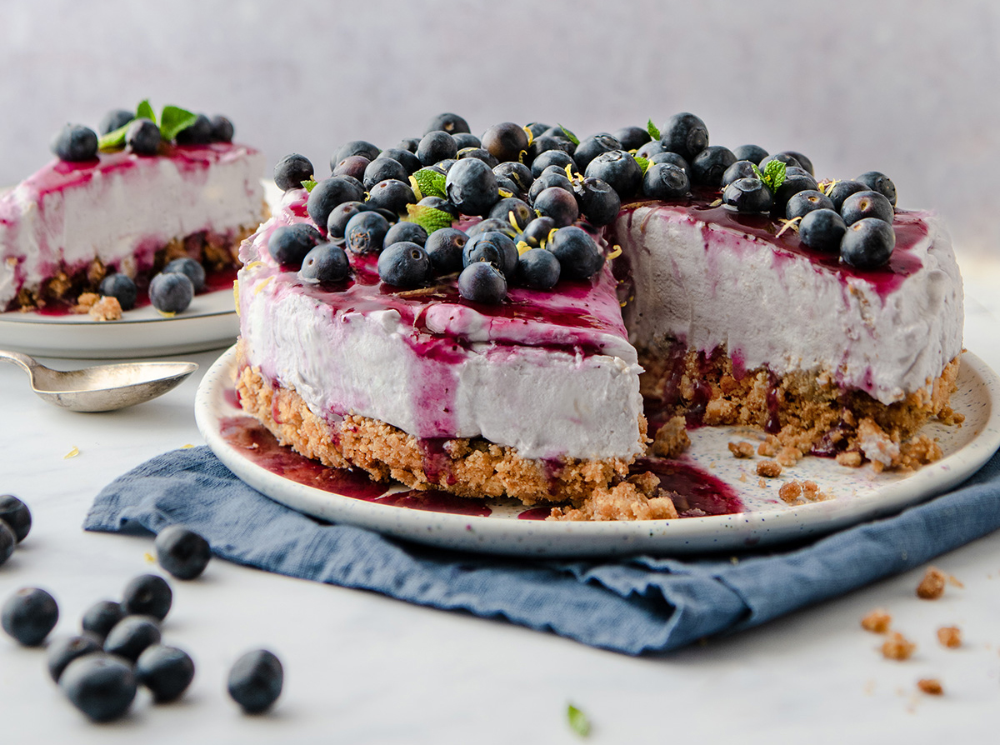

Elaboración de Tarta de Queso Realfooder
Descripción
Sin querer engañar a nadie, sí es posible hacer una tarta de queso o cheesecake en versión "fitness", más saludable que las tradicionales. En este caso, más que una versión ligera nos vamos a centrar en potenciar los ingredientes más nutritivos, para que no sea un simple postre de calorías vacías.
Ingredientes para la base
- 60 gramos de avellanas
- 6 dátiles
- 60 gramos de copos de avena
- 1 chorro de Bebida de avena (si no, puede ser bebida de soja u otros parecidos)
- 1 cucharada de aceite de coco
- 500 gramos de queso crema
- 100 gramos queso fresco
- 80 gramos de queso parmesano
- 200 gramos de crema de dátil
- 1 pizca de sal (opcional)
- 10 gramos de harina
Elaboración paso a paso
Primer paso: Comenzaremos haciendo la base dejando previamente los dátiles 30 min en remojo.
Paso dos: Trituraremos las avellanas y echamos el chorro de bebida de avena.
Tercer paso: Añadiremos los copos de avena, los dátiles y la cucharada de aceite de coco.
Cuarto paso: Depositamos la base en el molde y dejaremos enfriar mientras preparamos el interior de la tarta.
Quinto paso: Para el interior, batiremos todos los ingredientes, menos la harina, hasta que quede algo homogéneo.
Sexto paso: Añadimos la harina y volvemos a batir.
Séptimo paso: Una vez tengamos todo bien batido, lo echamos en la base del molde.
Octavo paso: Acto seguido horneamos con el horno precalentado a 190 grados y durante 30 minutos
Octavo paso: Pasado el tiempo, dejamos enfriar en un lugar fresco durante 3h
¡Y ahora toca disfrutar como toca, porque comer bien no significa sufrir!